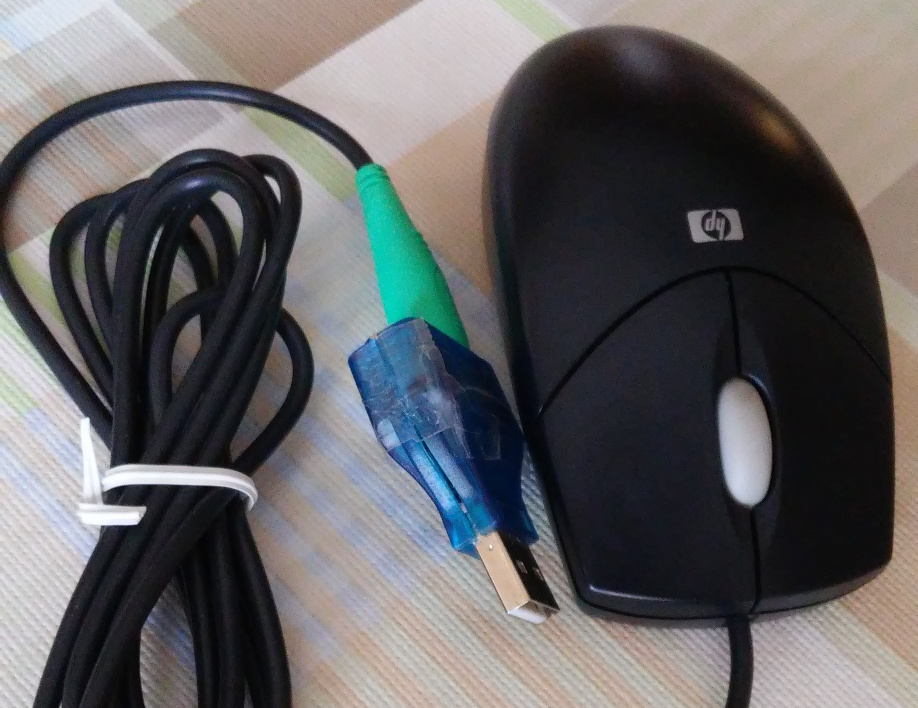
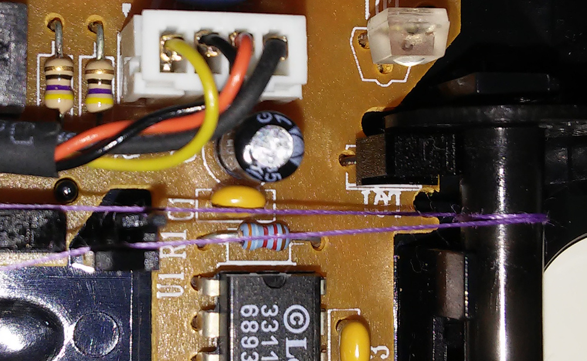
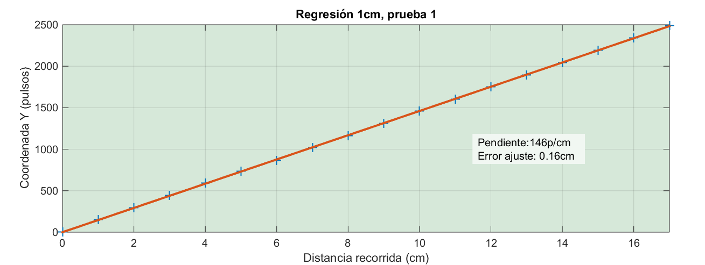
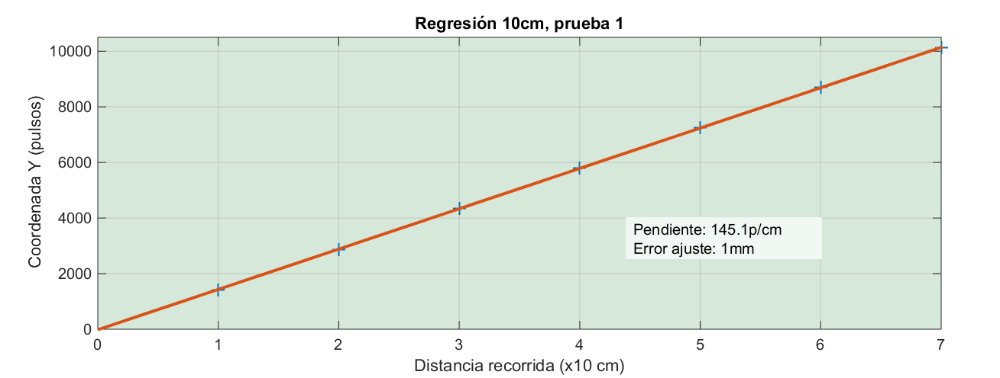
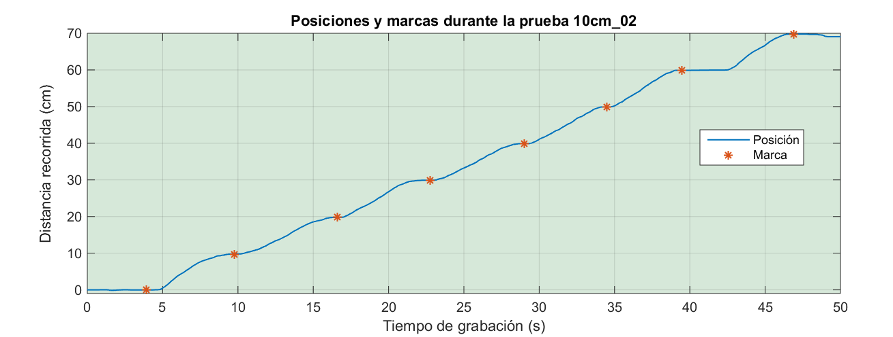
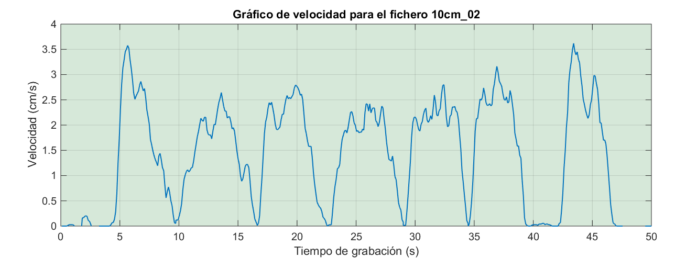
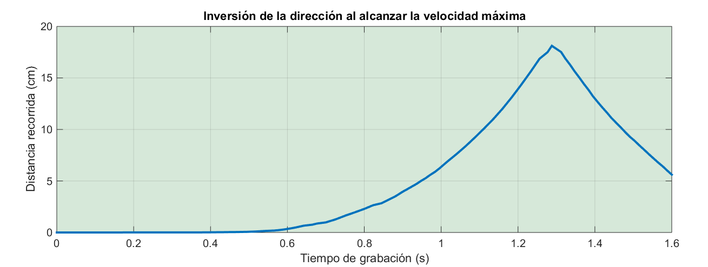
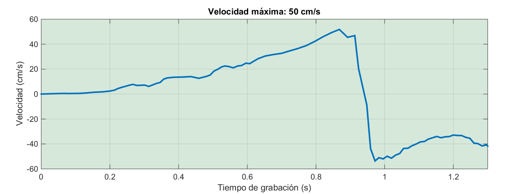
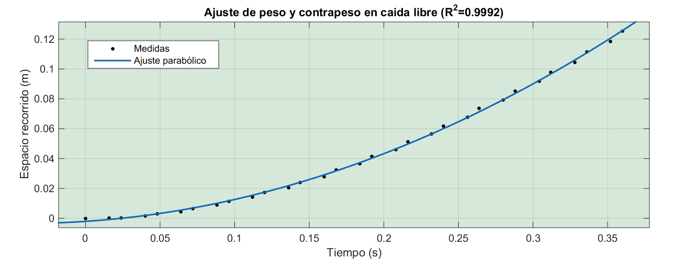
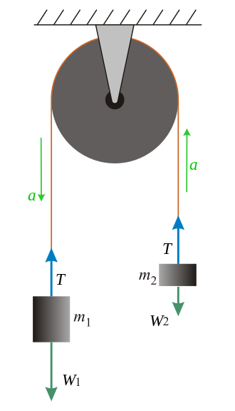

La primera forma que probé fue usando un motor paso-a-paso: un PIC iba transmitiendo en cada momento el número de pasos y así el PC tendría información sobre la distancia recorrida. A primera vista es buena idea, el problema es que los motores paso-a-paso son muy ruidosos, y ese ruido lo captaba el micrófono e invalidaba la prueba. No sirve.
El siguiente método que pensé es moviendo el micrófono a velocidad constante a lo largo del recorrido, por el tiempo transcurrido se podría deducir la posición. ¿Habéis intentado alguna vez mover un brazo a velocidad lenta y constante durante metro y medio? Me puse a pensar en otros métodos: empleando un sensor de ultrasonidos, por ejemplo, como el que se usa en los robots; grabando con una cámara al mismo tiempo que movía el micrófono...
Lo mejor sería con un encoder óptico, que es muy sensible y no hace ruido ninguno. El problema es que son componentes muy pequeños y ópticos, por lo que la alineación es muy importante y por eso son difíciles de construir. Fue entonces cuando caí en la cuenta de que podía conseguir muy fácilmente un dispositivo con dos encoders perfectamente funcionales ya montados, con un driver estándar para PC y con una botonera de tres botones como extra.
|  |
| Ratón de Paco, gracias Paco |
{kind=link}
El hardware
Casi nadie quiere ya un ratón de bola. Después de mendigar por el departamento de sistemas, Paco Centollo -nombre ficticio, por supuesto- donó amablemente y para beneficio de este blog y de toda la humanidad, no sólo un ratón de bola calidad suprema, sino también un práctico conversor PS2 a USB.
Antes de meterme en faena os voy a contar cómo funcionan los ratones mecánicos. La explicación también sería válida para un servo, porque lleva un mecanismo parecido; y también para una impresora, aunque en ese caso el encoder es casi siempre lineal, no rotativo.
El encoder -y yo uso la palabra encoder aunque en español debería decirse "codificador óptico"- consta de un led y un fotodiodo, como podéis ver en esta imagen. El led es el componente de color claro, casi translúcido, y el fotodiodo es negro.
{kind=link}
Entre los dos hay una rueda que tiene ranuras muy finas, las cuales van interrumpiendo la luz que llega al receptor. A más velocidad, más veces por segundo se interrumpe el rayo luminoso.
{kind=link}
El truco está en que el fotodiodo es doble. Lleva un fotodiodo arriba y otro igual debajo. Así puede no deducir la velocidad a partir de la frecuencia con que se interrumpe la luz, sino también la dirección del movimiento: si primero se corta la luz en el fotodiodo inferior y luego en el superior, ese lado de la rueda está subiendo. Si primero se corta arriba y luego abajo, entonces está bajando ese lado de la rueda.
Hay dos sensores iguales y perpendiculares, uno para cuando el ratón se mueve en la mesa siguiendo el eje X (izquierda/derecha) y otro para el eje Y (arriba/abajo). Como la rueda está fijada a un rodillo en contacto con la bola, cuando el ratón se desplace se podrá saber la dirección y velocidad del movimiento.
El circuito integrado que incorpora transforma los impulsos de luz en pulsos digitales y los envía al PC en forma de eventos. Más abajo hablaremos de la forma de interpretar dichos eventos.
Mi intención es abrir el ratón, quitar la bola y hacer pasar un hilo por uno de los rodillos, por ejemplo el del eje vertical. Tal que así:
|  |
| Detalle del hilo que usaremos para medir |
{kind=link}
Con el ratón sujeto o atornillado a la tabla, en un extremo del hilo anudaremos la punta de un destornillador pequeño y del otro colgaremos un contrapeso ligero. Al mover el destornillador una distancia determinada, arrastrará el rodillo y registraremos la posición con un programa.
El software
En general, cuando un ratón -o cualquier dispositivo de entrada- tiene algo que decir, envía un código. Este código queda en una cola de eventos a la espera de ser recogido. El driver recoge la señal y la pasa al sistema operativo, y el sistema operativo tiene una interfaz donde los programas interesados pueden recibir los eventos que se generan. En Linux los eventos se componen de tres variables: tipo de evento, código del evento y valor. Para un ratón los eventos con los que vamos a trabajar son:
Movimiento relativo (EV_REL): Indica movimiento relativo del ratón. Se llama relativo porque su valor indica el desplazamiento en una dirección u otra. Hay otros dispositivos señaladores que tienen el evento de posición absoluta, como por ejemplo una tableta gráfica. Pero en el caso de los ratones siempre es movimiento relativo. Este evento tiene como subtipo (o código) el eje al que se refiere. Generalmente los ratones tienen dos ejes llamados X e Y. El desplazamiento de la rueda puede considerarse otro eje, aunque tradicionalmente se considera como dos botones más. El valor de este evento indica cuantos pulsos se han contado en el desplazamiento. Este valor depende del diseño del ratón y es la causa de que unos ratones sean más rápidos o más sensibles que otros. Puede ser negativo o positivo según sea el sentido del desplazamiento.
Pulsación de botón (EV_KEY): Se envía cuando cambia el estado de alguno de los botones, es decir, cuando se pulsa o se libera un botón. Su código corresponde al botón que se ha pulsado. Y su valor puede ser 1 o 0. Es 1 si el botón está presionado, y es 0 si lo que hemos hecho es liberarlo.
Sincronismo (EV_SYN): En ocasiones se pueden dar varios eventos simultáneamente. Por ejemplo mientras movemos el ratón en ambos ejes (diagonalmente) y con un botón pulsado (arrastrando), movemos la rueda con el otro dedo. El evento de sincronización se envía cuando han terminado de enviarse todos los eventos que el dispositivo tuviera en cola en ese momento.
Ejemplo 1:
Si apretamos el botón izquierdo con el ratón quieto se generará un evento EV_KEY, cuyo código (subtipo) será BTN_LEFT y cuyo valor será 1. Seguido inmediatamente por un evento EV_SYN indicando el fin de la transmisión.
Ejemplo 2:
Si movemos el ratón lentamente en diagonal se generarán eventos EV_REL.
Primero con subtipo X y luego con subtipo Y cuyo valor será un número bajo normalmente 1 o -1 dependiendo de la dirección. Y tras ellos un evento EV_SYN. Es decir la secuencia sería:
EV_REL REL_X 1
EV_REL REL_Y 1
EV_SYN
EV_REL REL_X 1
EV_REL REL_Y 2
EV_SYN
EV_REL REL_X 1
EV_REL REL_Y 1
EV_SYN
Ejemplo 3:
Si hacemos clic con el botón derecho sin mover el ratón tendríamos la secuencia:
EV_KEY BTN_RIGTH 1
EV_SYN
(pausa)
EV_KEY BTN_RIGTH 0
EV_SYN.
Sabiendo esto he escrito un programita que lee los eventos y reacciona de la siguiente manera:
- Antes de nada deshabilita el ratón en Xorg, para que los movimientos y los clics no actúen sobre la interfaz gráfica.
- Cuando recibe un clic del botón derecho reinicia las coordenadas a 0, crea un nuevo fichero de log y comienza el modo grabación. Al siguiente clic detiene la grabación y cierra el fichero.
- Cuando recibe un clic con el botón izquierdo inserta una marca en el log, indicando la hora y la posición actual.
- Cuando recibe eventos de movimiento relativo actualiza las coordenadas X e Y en función del valor recibido.
- Si el modo grabación está activo, escribe las coordenadas actuales en el fichero a razón de 10 veces por segundo.
El código es el siguiente. No creo que merezca la pena comentar nada a excepción quizá de las constantes para los tipos de eventos de las que ya hemos hablado y las líneas 112 y 117 que habilitan y deshabilitan el ratón en Xorg. También es interesante leer la documentación de Linux::Input en http://search.cpan.org/~beppu/Linux-Input-1.03/lib/Linux/Input.pm.
#!/usr/bin/perl
#===============================================================================
#
# FILE: odometer.pl
#
# USAGE: ./odometer.pl id_event id_xinput
#
# DESCRIPTION: Medidor de distancias con el ratón.
#
#
# OPTIONS: ---
# REQUIREMENTS: ---
# BUGS: ---
# NOTES: Consultar la documentación de Linux::Input
# AUTHOR: Reinoso G.
# COMPANY:
# VERSION: 2.0
# CREATED: 28/12/13 17:25:49
# REVISION: 01/07/15 18:10:12
#===============================================================================
use strict;
use warnings;
use Linux::Input;
use Switch;
use Time::HiRes;
use constant {
EV_SYN => 0x00,
EV_KEY => 0x01,
EV_REL => 0x02,
EV_ABS => 0x03,
EV_MSC => 0x04,
REL_X => 0x00,
REL_Y => 0x01,
ABS_X => 0x00,
ABS_Y => 0x01,
BTN_LEFT => 0x110,
BTN_RIGHT => 0x111,
BTN_MIDDLE => 0x112,
};
my $polltime = 0.001; # segs
my $X = 0;
my $Y = 0;
my $logprefix = "/tmp/log_odometer";
my $logtimer = 0.1; # segundos entre cada registro de estado
my $logfile;
my $logfh;
my $rec = 0; # indica si estamos grabando los movimientos
# --- Bucle ---
$| = 1;
my $id_event = $ARGV[0] || usage();
my $id_xinput = $ARGV[1] || usage();
my $device = Linux::Input->new("/dev/input/event$id_event");
x_disable_device($id_xinput);
$SIG{INT} = \&ordered_exit;
print "Pulsa Ctrl+C para terminar la ejecución.\n";
my $t0 = Time::HiRes::time;
while (1) {
foreach my $ev ($device->poll($polltime)) {
switch($ev->{type}) {
case EV_KEY { on_key($ev) }
case EV_REL { on_rel($ev) }
case EV_SYN { on_syn($ev) }
}
}
my $t1 = Time::HiRes::time;
if ($t1 - $t0 >= $logtimer) {
$t0 = $t1;
$rec and printf $logfh "%.3f\t%d\t%d\n", $t0, $X, $Y;
}
}
sub usage {
print "
Uso: $0 id_dev id_x
id_dev número de fichero /dev/input/eventX
id_x identificador de dispositivo en Xorg
Para averiguar id_dev basta ejecutar 'evtest.pl /dev/input/event<X>' hasta
dar con el fichero del dispositivo.
Para averiguar id_x basta ejecutar xinput y buscar el id= correspondiente.
";
exit;
}
sub ordered_exit {
x_enable_device($id_xinput);
print "\n";
close $logfh;
exit;
}
sub x_disable_device {
my $id = shift or return;
`xinput disable $id`;
}
sub x_enable_device {
my $id = shift or return;
`xinput enable $id`;
}
# Evento de botón (press or released)
sub on_key {
my $ev = shift;
switch ($ev->{code}) {
case BTN_RIGHT { on_btn_right($ev) }
case BTN_LEFT { on_btn_left($ev) }
case BTN_MIDDLE { on_btn_middle($ev) }
}
}
# Evento de movimiento relativo
# Los ratones no tienen movimiento absoluto, las tabletas sí
sub on_rel {
my $ev = shift;
switch ($ev->{code}) {
case REL_X { on_rel_x($ev) }
case REL_Y { on_rel_y($ev) }
}
}
# --- Funciones de usuario ---
sub on_rel_x {
my $ev = shift;
$X += $ev->{value};
}
sub on_rel_y {
my $ev = shift;
$Y += $ev->{value};
}
sub on_syn {
my $ev = shift;
if ($rec) {
printf "%.3f\t%d\t%d\n",
$ev->{tv_sec} + $ev->{tv_usec} * 1E-6,
$X,
$Y;
}
}
# Reinicia las coordenadas
sub on_btn_right {
my $ev = shift;
return if $ev->{value} == 0; # sólo actuar en la pulsación
$rec = 1 - $rec;
if ($rec) {
my $rand = int(100 + 900*rand);
$logfile = $logprefix ."_". $rand . ".log";
open $logfh, ">>", $logfile or die;
print STDERR "Grabando: $logfile\n";
$X = 0;
$Y = 0;
}
else {
print STDERR "Grabacion terminada: $logfile\n";
close $logfh;
}
}
sub on_btn_left {
my $ev = shift;
return if $ev->{value} == 0; # sólo actuar en la pulsación
printf $logfh "%.3f\t%d\t%d\t-mark-\n", Time::HiRes::time, $X, $Y;
printf STDERR "%.3f\t%d\t%d\t-mark-\n", Time::HiRes::time, $X, $Y;
}
sub on_btn_middle {
my $ev = shift;
print "btn_middle not assigned\n";
}
Para invocar el programa hay que proporcionar dos parámetros, ambos numéricos. El primero es el identificador de dispositivo del kernel. En función de este parámetro el programa leerá los eventos del fichero /dev/input/eventX. El segundo es el identificador del dispositivo en Xorg, y servirá para habilitarlo y deshabilitarlo durante la ejecución.
Para esta prueba tendremos dos ratones, el ratón habitual que usaremos como siempre, y el de bola para las medidas. Sucede que los ratones y los teclados pertenecen a una clase especial de dispositivos USB llamados HID (Human Interface Devices). VMWare crea un único dispositivo de entrada virtual con todos los HID que encuentra en el sistema anfitrión y los unifica. Nos viene mal porque para este experimento necesitamos tener un ratón funcional y otro dedicado a medir que no mueva el cursor ni haga clics donde no debe. Para que VMWare trate los dispositivos HID como cualquier otro USB y nos deje conectarlos y desconectarlos a nuestro antojo hay que añadir estas dos líneas al fichero de configuración de la máquina virtual:
usb.generic.allowHID = "TRUE"
usb.generic.allowLastHID = "TRUE"
Medir distancias
Como habíamos descrito al principio, tenemos un hilo que pasa por el rodillo vertical y está atado a una punta delgada, un destornillador pequeño en nuestro caso.
Lo que vamos a hacer es comenzar la grabación y, con ayuda de un metro fijo a la mesa, ir moviendo el destornillador cada centímetro y poniendo una marca en el log. Cuando hayamos recorrido ya varios centímetros terminaremos la grabación y procesaremos el log. Este es el resultado:
|  |
| Medida a intervalos de 1cm (clic para ampliar) |
{kind=link}
Calculando la pendiente de la recta de regresión resulta que se avanzan 146 pulsos por cada centímetro recorrido. En una segunda prueba el resultado es 145, es normal que la medida varíe un poco. Para tener más precisión repetimos la misma prueba pero esta vez de 10 en 10cm.
|  |
| Medida a intervalos de 10cm (clic para ampliar) |
{kind=link}
El resultado es 1451 pulsos cada 10cm. Concretamente el intervalo de confianza al 95% está entre 1446 y 1456. Nos quedaremos con la media que para nuestros fines es suficiente. Esto es 145.1 pulsos por cm. O sea ¡un pulso cada 0.07mm!
Y esta es otra ocasión propicia para resaltar, una vez más, la diferencia entre precisión y exactitud. Usando un ratón la medida es muy precisa, notaremos cuando haya un cambio de tan sólo 0.07mm. Y al calcular la posición a partir del número de pulsos son saldrán hasta tres cifras decimales. Muy preciso todo.
Ahora bien, del ajuste se puede deducir el error promedio y según parece las medidas se desvían en promedio alrededor de 1mm por arriba o por abajo de la medida real. Cierto es que este error es tan pequeño que bien podría estar causado por nosotros mismos al situar la punta un milímetro antes o después. Y, por supuesto, ni que decir tiene que variar 1mm a lo largo de un recorrido de 70cm es un resultado muy bueno.
Si embargo la clave aquí está en que sólo podemos fiarnos de la medida hasta el orden de los milímetros, por mucho que la precisión sea de menos de una décima.
Posiciones y velocidades
Ahora que sabemos que cada centímetro vienen a ser 145 pulsos vamos a graficar una de las pruebas de 10cm. El primer gráfico será de la posición respecto al tiempo.
|  |
| Gráfico posición/tiempo (clic para ampliar) |
{kind=link}
Se ve que al aproximarse a un múltiplo de 10cm hay una pausa, se pone la marca y se continúa hasta el siguiente punto. Se aprecia muchísimo mejor en un gráfico de velocidad/tiempo. Recordad que la velocidad instantánea se calcula como la derivada de la posición respecto al tiempo.
|  |
| Gráfico velocidad/tiempo (clic para ampliar) |
{kind=link}
Aquí se ve que al salir de un punto salimos con mucha velocidad, llegando a alcanzar una velocidad media de 2 - 2.5 cm/s. Y al aproximarnos al siguiente punto paramos haciendo pequeños ajustes, que son los picos que se ven en las pendientes descendientes. A medida que avanza la prueba tenemos más confianza y por eso las velocidades medias van siendo mayores.
Velocidad máxima
Ya os he contado antes cómo se sabe si hay movimiento y hacia dónde. Si primero se interrumpe la luz abajo y luego arriba, pues es en un sentido; si ocurre al revés, en el otro.
¿Sabéis eso que pasa en el cine con las ruedas de los coches que a veces parece que van al revés? Los ingleses lo llaman Wagon Wheel Effect (https://en.wikipedia.org/wiki/Wagon-wheel_effect) y se debe a la velocidad de muestreo. Pues lo mismo va a pasar con nuestra rueda del ratón. Si aumentamos la velocidad llegará un momento en que el sensor óptico, por la velocidad de muestreo que usa, verá la ruda girar en sentido contrario, y de repente la distancia recorrida empezará a decrecer en lugar de ir aumentando. Algo así:
|  |
| Gráfico posición/tiempo excediendo la velocidad máxima (clic para ampliar) |
{kind=link}
La imagen anterior está hecha tirando del hilo cada vez más deprisa. Y sabido este hecho cabe preguntarse cuál es la velocidad máxima para tenerlo en cuenta. Si en lugar de la posición, graficamos la velocidad en función del tiempo, llegará un momento en que se invierte y de ser positiva pasa a ser negativa bruscamente. Ese punto nos indicará claramente cuál es la velocidad máxima. En este caso ronda los 50cm/s.
|  |
| Al exceder la velocidad máxima, esta cambia de signo (clic para ampliar) |
{kind=link}
Atwood
Aprovechando el montaje, esta vez en lugar de tirar yo del hilo con la mano, voy a atar un peso en el extremo y lo voy a dejar caer. En los breves instantes hasta que se alcanza la velocidad máxima esperamos un Movimiento Uniformemente Acelerado debido a la fuerza de la gravedad. En este caso, con velocidad inicial nula, la distancia recorrida en función del tiempo sigue la ecuación de una parábola:
\[ s = {1 \over 2} a t^2 \]
Y eso es precisamente lo que obtenemos, los datos se ajustan a una parábola con muy poco error:
|  |
| Ajuste de MUA a ecuación parabólica (clic para ampliar) |
{kind=link}
Ahora bien, si calculamos el parámetro a en la ecuación, que sería la aceleración, no va a salir 9.8m/s² como cabría esperar. Y no va a salir eso porque primero, hay un rozamiento bastante grande; y segundo porque no es una caída libre sino que al otro extremo hay un contrapeso.
En 1784 un matemático inglés llamado George Atwood quería comprobar la segunda ley de Newton. Esta ley dice que la aceleración de un cuerpo es directamente proporcional a la fuerza que se le aplica e inversamente proporcional a su masa. La única aceleración constante que tenía a mano era la fuerza de la gravedad. El valor de la aceleración gravitatoria ya estaba bien estudiado por Galileo, que lo había medido muchos años antes dejando caer bolas por planos inclinados y objetos desde cierta altura.
El asunto es que los cronómetros por entonces no eran como ahora y claro, medir el tiempo que tarda algo en caer con una aceleración de casi 10m/s² era complicado. Así que tenía que encontrar la manera de reducirla. Lo que sí estaba más avanzado eran las balanzas. Y lo que hizo fue poner dos pesos atados con una polea:
|  |
| Esquema de la máquina de Atwood. Wikipedia. |
{kind=link}
Como medir pesos era por entonces más fácil que medir tiempos, podía regular la aceleración y obtener resultados más exactos. La fórmula concreta para la aceleración en función de los pesos, si os interesa, se puede ver en la Wikipedia: https://en.wikipedia.org/wiki/Atwood_machine
Nada más de este tema por ahora. Espero que os haya gustado. Como siempre, los archivos y programas propios utilizados para la elaboración de este artículo podéis descargarlos de aquí: https://sites.google.com/site/electronicayciencia/ratonbola.zip